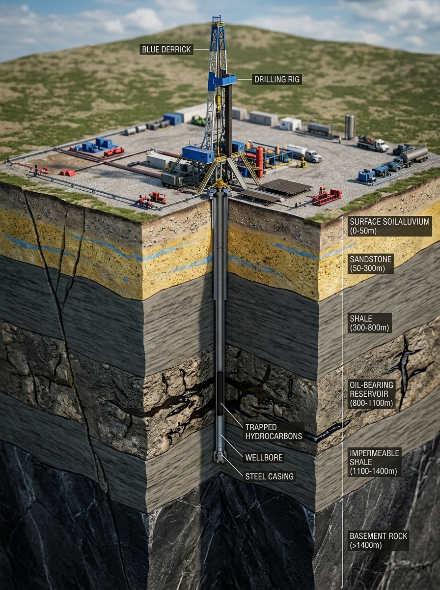

94.2% AI Model Confidence (XGBoost + Physics Engine)
1. Risk Assessment Results & Active Early Warning Alerts
CRITICAL ALARM • 84.2%
HAZ-KICK-01
Gas Kick & High-Pressure Influx
Pore pressure anomaly detected at 3,420 m. Formation pressure gradient estimated at 11.8 PPG vs active mud weight 11.4 PPG (underbalance condition: -0.4 PPG).
Delta-P Overbalance-320 PSI
Pit Gain Rate+18.4 bbl/hr
Offset CorrelationNHRK-98 (Kick @ 3422m)
HIGH RISK • 68.5%
HAZ-STUCK-02
Differential Stuck Pipe Threat
High permeability sand interval with 4.8 mm thick mud cake. Overpull margin decreased to 22.4 klbs. Prolonged stationary string poses differential sticking risk.
Overpull Margin22.4 klbs (<25 safe)
Dogleg Severity3.8° / 30m
Mud Cake Thick.4.8 mm
ELEVATED • 62.0%
HAZ-LOSS-03
Lost Circulation & Thief Zone
Fracture gradient margin is constrained to 0.42 PPG. Dynamic ECD surge above 12.3 PPG will initiate micro-fractures in lower depleted sand at 3,445 m.
Mud Weight Optimization: Add Barite weighting material to increase active mud weight from 11.4 PPG → 12.1 PPG. Establishes +0.3 PPG safe overbalance (+240 psi) against Tipam pore pressure.
02
ROP & Rotary Velocity Capping: Strictly restrict Rate of Penetration to ≤ 10.0 m/hr and rotary speed between 95 - 110 RPM to eliminate surge pressure spikes.
03
Off-Bottom Conditioning & Gas Degassing: Circulate bottoms-up for a minimum of 45 minutes with vacuum degasser operating at 100% until gas returns measure < 1.2%.
04
BOP Testing & Kick Alarms: Function-test annular preventer, calibrate trip tank pit level alarms at ±3.0 bbls, and review shut-in drill with floor crew.
Directorate General of Mines Safety (DGMS) • Oil India Limited Operational Safety Code
WAITING FOR THE SUPERVISOR ACTION
Drilling operations on Rig NHRK RIG-A (Well OIL-AS-NHRK-104) are currently in SAFE STANDBY. Rotary drill string rotation is locked. Downhole gas kick risk (84.2%) and pressure underbalance require verified supervisory clearance. When the Rig Operations Supervisor clicks approve, the permit is digitally validated and the Drill Engineer console is immediately authorized to commence drilling.
SUPERVISOR ON DUTY:Er. Rajiv Bordoloi (Superintending Drilling Engineer)
DIGITAL AUTHORIZATION ID:OIL-AS-2024-SUP-9182 (PENDING SIGN-OFF)
DRILL FLOOR STATE:STANDBY LOCKED (OFF-BOTTOM)
MANDATORY SUPERVISORY CLEARANCE REQUIRED
As a Drilling Engineer, you do not have permission to self-authorize drilling operations. This permit should be approved by Supervisor (Er. Rajiv Bordoloi) before rotary drilling can commence. Rig floor rotary controls remain locked in safety standby.
SHOULD BE APPROVED BY SUPERVISOR
GEOLOGICAL & DRILLING INFORMATION CORE (GDIC)
Drilling Knowledge Repository & RAG Chatbot
Search historical drilling events, lessons learned, operational challenges, and mitigation measures grounded across Upper Assam basin borehole datasets.
Knowledge Base Synced Last updated: 30 Sep 2026 (Live Synced)
KNOWLEDGE DOCUMENTS
300Verified Records
DRILLING EVENTS
2,000Incidents & Ops
HISTORICAL MITIGATIONS
648Field Syntheses
INDEXED WELLS
150Active & Historic
RAG TRACK PIPELINE:
1. Query Input
>
2. Dense & Relational Retrieval
>
3. Relevant Docs Matching
>
4. Event & Mitigation Extraction
>
5. Grounded Context Synthesis
ARCHIVAL RAG RETRIEVAL ENGINE V2.0
Relational + Keyword BM25 Precision over 2,000 Verified Assam Records
150 Boreholes Ready | Live Database Grounding: Active
CONTEXT Upper Assam
FILTERS:Dynamic Grounding: 100% Deterministic
FREQUENT INQUIRIES:📌 Stuck-pipe events in Barail📌 Mud-loss mitigation measures📌 Kick incidents in Girujan📌 Lessons from high NPT wells
Welcome to the eRTMAC Geological & Drilling Information Core. You can ask any operational question regarding historical drilling challenges, incidents, and mitigations across the Upper Assam & Digboi-Moran Basins.
Every response dynamically queries our 2,000 archival drilling events and 300 primary source documents (DDRs, WCRs, SQWRs) to provide structured mitigations, corroborated offset well evidence, and clickable citations.
TRY ASKING ABOUT HISTORICAL FIELD OPERATIONS:
Active Source Preview
Select Record
Document:
Daily Drilling Report (DDR) #61
Target Formation:
Tipam Sandstone
Well Identifier:
OIL-DGB-001
Archival Date:
Archival Record
EXTRACTED GROUNDING PASSAGE
Click any citation badge or historical event card to inspect the exact archival DDR / WCR passage and operational logs.
Knowledge Explorer
Corroborated Records
Enter a query above or click a topic to search historical drilling records.
WELL SEARCH & ANALYSIS
• Find and analyze nearby wells with geological and operational intelligence
✕
25 km
15102550 km
GIS Sync: Digboi Central Datahub • Last updated: 14:52:08 IST • Online
Showing 14 Offset Wells within 25 km of OIL-AS-NHRK-104 (Nahorkatiya Field)
● 8 Producing● 4 Completed● 2 Shut-in
27°18'28.4" N
95°20'44.1" E
UTM ZONE 46N (WGS84)
10 km
Buffer: 25 km
NHRK-98HISTORICAL OFFSET WELLCompleted
Nahorkatiya Field • Distance: 2.4 km North-East from Active Target (OIL-AS-NHRK-104)
Overview
Drilling Analysis
Geology & Formations
NPT & Events
WELL TECHNICAL SPECIFICATIONS SPUD: 15-Mar-2018 | COMP: 28-Aug-2018
ROTARY DRILLING LOCKED — WAITING FOR SUPERVISOR ACTION
Rig floor rotary drilling is placed on safety hold. Critical risk assessment anomalies (Gas Kick 84.2%) require supervisory clearance on the Alerts page before the drill string can be engaged.
CURRENT WELL
FORMATION
TARGET DEPTH (TD)
CURRENT DEPTH
2,501.3 m
(65.0% of TD)
SUPERVISOR MONITORING MODE (READ-ONLY)
3D DRILLING OPERATION (Real-time)

ROTARY DRILLING ACTIVE • 108.2 RPM
3D SUBSURFACE STRATA OVERVIEWWell OIL-AS-NHRK-104 • Tipam Formation @ 2,501.3 m
Real-time TelemetryBit Active
🔥BIT CUTTING FACE THERMODYNAMICS
CUTTER TEMP184.2 °C
FRICTION LOADHigh Shear Stress
NOZZLE JET FLOW2,850 LPM
THERMAL STATUSCritical Heat Zone
"24/7 continuous rotary drilling: Managing bit friction heat is critical to prevent cutter shear failure."
🧭STEERABLE BHA & DIRECTIONAL TRAJECTORY
TOOLFACE / BENT SUB1.50° Bend (High-Side)
INCLINATION24.8° Build Rate
AZIMUTH142.3° SE
RESERVOIR INTRUSIONTipam Fractured Sand
"Directional drilling mode: Positive displacement mud motor slowly cuts through rock strata at designated wellbore angle."
0 m
500 m
1,000 m
1,500 m
2,000 m
2,501.3 m
3,000 m
3,500 m
3,842 m (TD)
Alluvium0 – 320 m
Upper Bhuban320 – 1,120 m
Middle Bhuban1,120 – 2,200 m
Tipam (Current)2,200 – 2,680 m
Lower Tipam2,680 – 3,100 m
Basement3,100 – 3,842 m
Rotation108 rpm
Depth Advance+0.8 m / 5s
Drilling ModeAuto
LIVE DRILLING METRICS (Real-time)
Live
Last updated: 14:32:08 IST
LIVE ML RISK ASSESSMENT INTERLOCKTHRESHOLD: 80.0% MAX
Synchronized with ML Hazard Model • Auto-shutdown & supervisor hold triggered if risk ≥ 80%
PREDICTED RISK71.5%
80% SHUTDOWN
SAFE / PERMIT ACTIVE
DEPTH
2,501.3 m
+0.8 m / 5s
ROP
12.6 m/hr
↑ 2.4%
WOB
27.2 ton
↑ 1.1%
TORQUE
263.6 kNm
↑ 3.2%
RPM
108.2 rpm
→ 0.0%
PUMP PRESSURE
3,841 psi
↑ 0.8%
MUD WEIGHT
11.16 ppg
→ 0.0%
FLOW RATE
754.2 LPM
↑ 1.5%
REAL-TIME TRENDS (Last 30 minutes)
FORMATION PROGRESS
Upper Tipam (Completed)2,200 – 2,450 m
100%
Tipam (Current)2,450 – 2,680 m
22%
Lower Tipam2,680 – 3,100 m
0%
Basement3,100 – 3,842 m
0%
OPERATION STATUS
● DRILLING
Bit Type
PDC (12 1/4")
Mud Type
WBM (11.16 ppg)
Drilling Mode
Auto
Expected TD
3,842 m
Est. Time to TD
106 hrs
Duration (Today)
5 hrs 12 mins
WELL DRILLING INTELLIGENCE & PERFORMANCE REPORTS
OFFICIAL DOSSIER
Oil India Limited • Daily Drilling Reports (DDR), Real-time Telemetry, Subsurface Geomechanics & Automated PDF Generation
ACTIVE TARGET WELL DOSSIER & TECHNICAL TELEMETRY
Nahorkatiya-104 (Active Target)Active Drilling
Nahorkatiya Field • Assam-Arakan Basin • Rig: BHEL 2000 HP Rig #14 • Spud: 12-Mar-2024
CURRENT / TARGET DEPTH2,501.3 m65.1% of 3,842 m TD
ACTIVE FORMATIONTipam SandstonePorous Sand • 2,200m – 2,680m